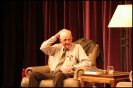

Skip ahead to:
Wendell Berry, genius
Wendell Berry is a Kentucky farmer, novelist, poet, conservationist, philosopher, agrarian and teacher. Now aged 72, he raises crops, uses horses for ploughing, and writes with a pencil. His manuscripts are transcribed by his wife Tanya on a manual typewriter.
He is the author of 11 novels and short story collections, and he has written many books of poetry and dozens of essays – all this in a writing career that spans five decades. Berry has been called “the prophetic American voice of our day” and “a philosopher … in the tradition of Emerson and Thoreau.” [1]
{kind=link}
Wendell Berry is also, and most crucially, a Christian.
The genius
I consider Berry to be a genius, and believe that everyone should read lots of his work. My proclamation of Wendell Berry’s genius does not mean I believe he is omniscient or infallible. Berry is a genius because of his fearless application of Biblical Christianity to the burning issues of the day: ecology, globalisation, international justice, and morality. He applies Biblical insights to the issues of economics, imperialism, farming, animal husbandry and global warming.
He articulates a compelling view of practical Christian living that I wish many more would read and heed.
Berry is no tree-hugging pantheist or idealistic dreamer; he is a brilliant man who works hard on his marginal farm and writes hard truth.
He deals head-on with the conventional critique of Christianity by conservationists – that is, he accepts the problem: “Throughout the five-hundred years since Columbus’s first landfall in the Bahamas, the evangelist has walked beside the conqueror and the merchant, too often blandly assuming that his cause was the same as theirs. … The certified Christian seems just as likely as anyone else to join the military-industrial conspiracy to murder Creation.” [2]
Berry recognises, however, that although the indictment of Christianity by conservationists may be just, it does not come from a good understanding of the Bible. He correctly sees the problem: the Church herself has been insufficiently Biblical in her understanding of Creation and of what Stewardship ought to mean.
It is in fact the inadequate Christianity of Christianity that is to blame for our poor showing in ecology and conservation.
The agrarian
Berry has been described as an agrarian, a description he himself would accept. However, agrarianism has become a term of abuse when people use it to describe hopeless romanticism. There have been writers under the agrarian banner who appear to be advocating an impractical farm-centred life for every human being on the planet. But to Berry, agrarianism is about applying the principles of respectful utilisation of resources to all walks of life.
“Everything that happens on an agrarian farm is determined or conditioned by the understanding that there is only so much land, so much water in the cistern, so much hay in the barn … The agrarian sense of abundance comes from the experienced possibility of frugality and renewal within limits.” [3]
He has farmed the same Kentucky acres, not far from his birthplace, for most of his adult life. He grounds his respect for nature, land and livestock in the love of the Creator for His creation. Berry challenges conservative, wealthy, western Christians to remember that God created the universe and that He created it good. He urges us to remember that God loves His creation – so much that He himself redeemed it through His own suffering from the almost mortal wounds inflicted on the world by man’s sin.
Berry is urging us to love and respect creation in an imitation of the Creator’s love.
Berry applied
So what use is Berry to the world? What application can be drawn from his work, apart from a call for responsible farming?
I believe that Berry’s agrarianism is a model of Christian living and is every bit as applicable to the urban family as to the farmer.
Country Christians show respect for Creation when they avoid industrial-scale monoculture, [4] when they use the land to produce what the land can produce, and when they embrace the goal of sustainability rather than short-term profit.
Urban Christians show respect for community when they eat local produce. They participate in God’s creation when they eat in tune with the seasons. Setting our menus by whim, eating out-of-season food imported from far away at great cost of fuel for transport or heating – these are destructive and wasteful.
Christians of either urban or rural origin fail to love their neighbour unless they take responsibility for how they dispose of their waste and heat their homes.
Christians fail to exercise stewardship of their world by choosing destructive hobbies, extravagant food and useless employment. Professional golfers, skateboarders, forex dealers and marketing executives are exceeded only by computer game developers as examples of useless occupations.
There is also much joy in country-style life, even in the city. Beer tastes better after good work. There is real joy after harvest. Rather than the artificial jollity of “new year” when one celebrates a calendar change (or the pointless fireworks on November the Fifth in memory of whatever it was), there is relief, gratitude and celebration of a good crop, a nice wool clip, or new wine in the vats. The poets, builders and bus drivers in the city will also rejoice because it is their food that is being stored.
Berry strongly emphasises the centrality and the continuity of community to Christian living. A respect for tradition, learning from the experience of previous generations, a reverence for place, a commitment to build on existing foundations – these are some of the hallmarks of the Christian.
He challenges the young to stay where they were born, to work and worship with family and community, and to resist the pressure to move away from the land.
Berry notes several drivers behind the huge country-to-city drift. Rural life is being destroyed by industrial farming with its mechanisation and low employment needs. Local farming has its viability further harmed by the large-scale importing of mass-produced commodities disguised as food.
In addition, we appear to have accepted the current belief that country work is “bad” and city work is “good”. The view appears to be that milking cows or shearing sheep is menial, dehumanising toil. But liberation, wealth and ease are to be found in town.
Of course, for every professional musician or neurosurgeon for whom the town is indeed a better place, there are thousands of people who work in fast “food” joints, decorate shop windows, or work in factories – hardly the epitome of freedom and dignity. Even more are on the dole or other forms of welfare.
Is a solution to damaged country-side and crowded cities to be found in agrarianism, or is the price too high? Is agrarianism just joyless toil at “Hardscrabble Farm” with no comforts or treats?
Of course not. To be in tune with Creation is to be aware of the Creator; to love our neighbours is to be loved by them.
In a word, read some Wendell Berry [5] and become both a help and an ornament to our nation.
Hans Snoek was born in Medan, Indonesia (pop. 2,400,000).
Footnotes
[1] From Christian Science Monitor and San Francisco Chronicle, respectively.
[2] CrossCurrents, “Christianity and the Survival of Creation”.
[3] Orion, “The Agrarian Standard”.
[4] Monoculture is the cultivation of only a single crop in a given region.
[5] More recommended Wendell Berry: The Unsettling of America (non-fiction), Jayber Crow (novel), “The Death of the American Family Farm” (Agribusiness Examiner), “In Distrust of Movements” (Resurgence).